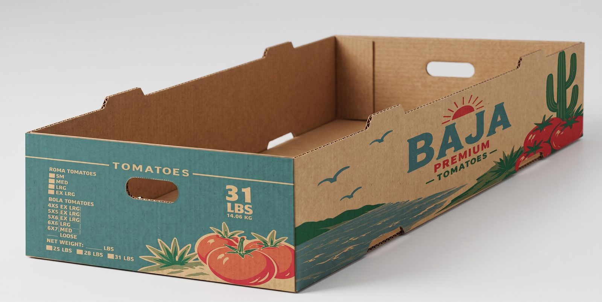
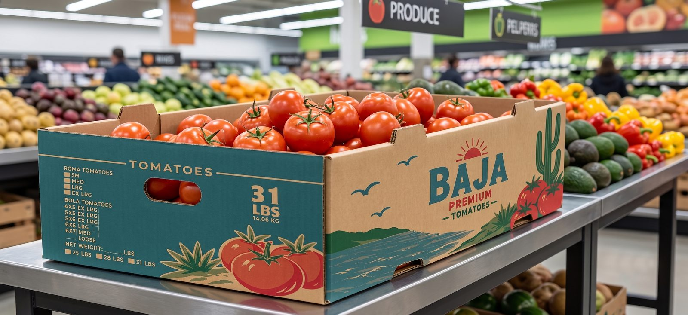
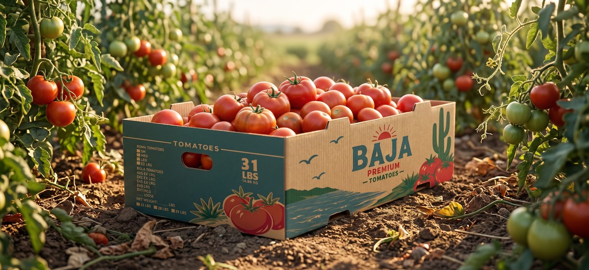

STUDIO — structural + graphic dieline, corrugate, die-cut handles


RETAIL & FIELD — lifestyle context photography
Baja Premium Tomatoes
Client — SmartCo Packaging SolutionsIndustryProduce / Agriculture
Year[INSERT YEAR]
RoleStructural & Graphic Designer
SoftwareArtiosCAD, Illustrator
Challenge
Design a generic tomato shipping box that competes for attention in a crowded produce aisle while surviving the rigors of harvest, transit, and retail handling.
Objectives
Convey freshness, quality, and regional origin at a glance; keep the structure efficient to produce and strong enough for stacked transit.
Solution
A teal, kraft, and red palette signals freshness, agriculture, and the natural vibrancy of tomatoes. Coastal Baja linework, a rising sun mark, and grading checkboxes give the box both shelf presence and functional grading information for packers.
Results
[INSERT RESULTS — sell-through, supplier feedback, or production volume once available]
Lessons learned — Color can be used strategically to communicate product attributes and capture attention. Balancing visual appeal with functional clarity (grading checkboxes, weight call-outs) strengthens both brand recognition and shelf performance.